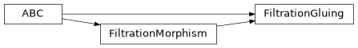
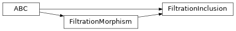
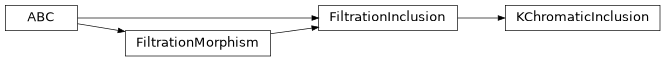
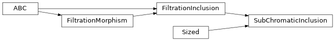

chalc.morphisms¶
Helper classes representing morphisms between filtered simplicial complexes.
Submodules¶
Attributes¶
One-dimensional arrays of integer indices or degrees. |
|
Names of persistence modules in a 6-pack of persistence modules. |
Classes¶
An \(\mathbb{R}\)-indexed persistence module of \(\mathbb{N}\)-graded vector spaces. |
|
Represents the gluing map of a disjoint union of subfiltrations. |
|
Abstract inclusion of a filtered subcomplex. |
|
Abstract map between filtered simplicial complexes. |
|
Corresponds to gluing all subfiltrations spanned by \(k\) colours. |
|
Inclusion of the simplices having at most \(k\) colours. |
|
6-pack of persistence modules. |
|
Natural maps between persistence modules, with one-dimensional int64 support arrays. |
|
Birth-death pairings for persistence modules in a 6-pack. |
|
Representative cycles for persistence modules, with one-dimensional int64 support arrays. |
|
Represents a gluing map in a chromatic filtration. |
|
Inclusion of a subfiltration spanned by any combination(s) of colours. |
Package Contents¶
- class AugmentedPersistenceModule(
- intervals: collections.abc.Mapping[int, int | None] | None = None,
- entrance_times: collections.abc.Sequence[float] | numpy.ndarray[tuple[int], numpy.dtype[numpy.floating]] = (),
- degrees: collections.abc.Mapping[int, int] | None = None,
An \(\mathbb{R}\)-indexed persistence module of \(\mathbb{N}\)-graded vector spaces.
The module is augmented with (1) a choice of interval basis, where each interval is a pairing between a generator and a relation, (2) a strict linear ordering of the set of all generators and relations, which is compatible with their entrance times.
In particular, each interval is uniquely identified by the integer index of its generator, and distinct integer indices may correspond to elements that have the same entrance time.
- property degrees: types.MappingProxyType[int, int]¶
Return the degrees of interval endpoints.
- property entrance_times: numpy.ndarray[tuple[int], numpy.dtype[numpy.float64]]¶
Return all entrance times of generators/relations in the persistence module.
The entrance times are sorted by generator/relation index.
- interval(birth_index: int | numpy.integer) tuple[float, float]¶
Return the interval with the given birth index.
- intervals(degrees: int | numpy.integer) numpy.ndarray[tuple[int, Literal[2]], numpy.dtype[numpy.float64]]¶
- intervals(degrees: collections.abc.Sequence[int] | IndexArray | None = ...) dict[int, numpy.ndarray[tuple[int, Literal[2]], numpy.dtype[numpy.float64]]]
Get the interval decomposition of the persistence module.
- Parameters:
degrees – Degrees in which the intervals are desired. If a list is provided then a list of matrices is returned, with the order of matrices respecting the order of entries of degree. If degree is not provided then the returned matrix will contain intervals features from all degrees from zero to
max(self.degrees).- Returns:
An \(m \times 2\) matrix whose rows are the endpoints of intervals in the interval decomposition, or a dictionary of such matrices indexed by degree. The rows are sorted by generator index. Degenerate intervals (having zero persistence) are not removed.
- nonempty_degrees() IndexArray¶
Return all inhabited degrees in the persistence module.
- property pairings: types.MappingProxyType[int, int | None]¶
Get the birth-death pairing indices for this module.
- to_hdf5(file: h5py.Group, *, pairings: collections.abc.Mapping[int, int | None] | None = None) None¶
Save interval pairings, endpoint entrance times, and interval degrees.
Infinite deaths are stored as
-1. Degrees are stored in pairing row order. By default, pairings use this module’s endpoint indices. An enclosing 6-pack can supply its original pairings instead, in the same interval order.
- class FiltrationGluing(filtration: chalc.filtration.Filtration, num_subfiltrations: int)¶
Bases:
FiltrationMorphism,abc.ABC
Represents the gluing map of a disjoint union of subfiltrations.
This is an abstract class. To specify a gluing map, use one of its concrete subclasses or create your own. To implement a gluing map, you need to implement the
simplex_in_filtrationmethod, and make sure thatself.num_subfiltrationsis initialized beforesixpackis called.Persistence computations are reduced to the case of a filtered inclusion by constructing a mapping cylinder. Therefore, pairing indices in the returned sixpack correspond to mapping cylinder indices, not original indices.
Representative cycles, if requested in the call to
sixpack, are given as numpy arrays of int64 indices. These indices identify simplices in either the domain or codomain by their index in the corresponding boundary matrix. Representative cycles for the kernel and domain are arrays of domain indices, while cycle representatives for the image, codomain and cokernel are codomain simplices. The representative cycle for each interval in the relative module is given as a pair of chains(a, b)whereda= 0andf(a) = db(herefis the gluing map). The indices foraandbare domain and codomain indices respectively.The sixpack returned by this class contains a
metadatadictionary with the following keys:domain_indicesandcodomain_indices: dictionaries that mapdomain and codomain indices to their indices in the mapping cylinder.
domain_shift: dictionary that maps each domain index to the indexof its degree-shifted copy in the mapping cylinder.
domain_index_to_subfiltration_index: a list that maps eachindex in the boundary matrix of the domain of the gluing map to the index of the subfiltration to which this column corresponds.
domain_index_to_codomain_index: a list of integers that completelydescribes the gluing map; the list entry at index
iis the index of the codomain simplex that is the image of theith domain simplex. Multiple domain indices map to the same codomain index, one for each subfiltration.
See also
- abstractmethod simplex_in_filtration(column: tuple[list[int], int, float, list[int]], i: int) bool¶
Check if a simplex is in the ith subfiltration.
- sixpack(max_homological_degree: int | None = None, *, get_representatives: bool = False) types.SixPack¶
Compute the 6-pack of persistence modules of a coloured point-cloud.
Compute the modules associated with this map \(f : L \to K\), where \(K\) is the supplied filtration and \(L\) is the domain specified by the morphism.
- Parameters:
max_homological_degree – Maximum homological degree for which the persistence modules are computed. By default modules of all dimensions are computed.
- Keyword Arguments:
get_representatives – If
True, also compute representative cycles for each persistence module in the 6-pack, and the natural maps between the persistence modules in the 6-pack with respect to the interval basis defined by these representative cycles. Defaults toFalse.
- Returns :
A 6-pack object containing the following persistence modules (where \(H_*\) is the persistent homology functor and \(f_*\) is the induced map on persistent homology):
\(H_*(L)\) (domain)
\(H_*(K)\) (codomain)
\(\ker(f_*)\) (kernel)
\(\mathrm{coker}(f_*)\) (cokernel)
\(\mathrm{im}(f_*)\) (image)
\(H_*(\mathrm{cyl}(f), L)\) (relative homology)
A
SixPackexposes its modules as attributes and iterates over(module_name, module)pairs. UseAugmentedPersistenceModule.intervals()on these modules to obtain birth and death times in the desired degrees. The original birth and death indices, withNonefor infinite deaths, are available throughSixPack.pairings.If
get_representatives=True, then the returnedSixPackhas additional attributes:#.
representativescontains representative cycles for each module. Each member corresponds to one module, and is a dictionary mapping an interval in the module to a cycle representative. Intervals are identified by the index of their birth among all interval endpoints in the module.#.
morphismscontains the natural maps between the persistence modules in the 6-pack. Each persistence map is represented by a binary matrix with respect to chosen interval bases of its source and target modules. The interval generators are specified by the stored representative cycles, whose classes are taken in the quotient defining each module. At each filtration index, the representatives of the intervals alive at that index form a basis, and restricting the matrix to those source and target intervals gives the linear map at that index. For the domain, codomain, image, cokernel, and relative persistence modules, the birth time of an interval is the maximum birth time of any simplex in its representative cycle. This is not necessarily true for the kernel.
- class FiltrationInclusion(filtration: chalc.filtration.Filtration)¶
Bases:
FiltrationMorphism,abc.ABC
Abstract inclusion of a filtered subcomplex.
This class constructs the inclusion of an arbitrary subfiltration of a chromatic filtration.
This is an abstract class. To specify an inclusion map, use one of its concrete subclasses or create your own. To implement your own inclusion map, you need to implement the membership test
simplex_in_domainwhich checks if a simplex is in the domain of the inclusion map.Representative cycles, if requested in the call to
sixpack, are given as numpy arrays of int64 indices; each index identifies a simplex by its codomain boundary columns. Representative cycles for the kernel, domain, and image are sums of simplices in the domain, while cycle representatives for the codomain and cokernel are sums of codomain simplices. The representative cycle for each interval in the relative module is given as a pair of chains(a, b)wherea=db.See also
- abstractmethod simplex_in_domain(column: tuple[list[int], int, float, list[int]]) bool¶
Check if a simplex is in the domain of the inclusion map.
A simplex is identified by its column in the boundary matrix of the filtration. This column has the same format as the columns returned by
chalc.filtration.Filtration.boundary_matrix().
- sixpack(max_homological_degree: int | None = None, *, get_representatives: bool = False) types.SixPack¶
Compute the 6-pack of persistence modules of a coloured point-cloud.
Compute the modules associated with this map \(f : L \to K\), where \(K\) is the supplied filtration and \(L\) is the domain specified by the morphism.
- Parameters:
max_homological_degree – Maximum homological degree for which the persistence modules are computed. By default modules of all dimensions are computed.
- Keyword Arguments:
get_representatives – If
True, also compute representative cycles for each persistence module in the 6-pack, and the natural maps between the persistence modules in the 6-pack with respect to the interval basis defined by these representative cycles. Defaults toFalse.
- Returns :
A 6-pack object containing the following persistence modules (where \(H_*\) is the persistent homology functor and \(f_*\) is the induced map on persistent homology):
\(H_*(L)\) (domain)
\(H_*(K)\) (codomain)
\(\ker(f_*)\) (kernel)
\(\mathrm{coker}(f_*)\) (cokernel)
\(\mathrm{im}(f_*)\) (image)
\(H_*(\mathrm{cyl}(f), L)\) (relative homology)
A
SixPackexposes its modules as attributes and iterates over(module_name, module)pairs. UseAugmentedPersistenceModule.intervals()on these modules to obtain birth and death times in the desired degrees. The original birth and death indices, withNonefor infinite deaths, are available throughSixPack.pairings.If
get_representatives=True, then the returnedSixPackhas additional attributes:#.
representativescontains representative cycles for each module. Each member corresponds to one module, and is a dictionary mapping an interval in the module to a cycle representative. Intervals are identified by the index of their birth among all interval endpoints in the module.#.
morphismscontains the natural maps between the persistence modules in the 6-pack. Each persistence map is represented by a binary matrix with respect to chosen interval bases of its source and target modules. The interval generators are specified by the stored representative cycles, whose classes are taken in the quotient defining each module. At each filtration index, the representatives of the intervals alive at that index form a basis, and restricting the matrix to those source and target intervals gives the linear map at that index. For the domain, codomain, image, cokernel, and relative persistence modules, the birth time of an interval is the maximum birth time of any simplex in its representative cycle. This is not necessarily true for the kernel.
- class FiltrationMorphism(filtration: chalc.filtration.Filtration)¶
Bases:
abc.ABCAbstract map between filtered simplicial complexes.
The map is a combinatorial proxy for the spatial relationships between points in the filtration of different colours. This is an abstract class. To specify a morphism, instantiate one of its concrete subclasses.
- abstractmethod sixpack(max_homological_degree: int | None = None, *, get_representatives: bool = False) types.SixPack¶
Compute the 6-pack of persistence modules of a coloured point-cloud.
Compute the modules associated with this map \(f : L \to K\), where \(K\) is the supplied filtration and \(L\) is the domain specified by the morphism.
- Parameters:
max_homological_degree – Maximum homological degree for which the persistence modules are computed. By default modules of all dimensions are computed.
- Keyword Arguments:
get_representatives – If
True, also compute representative cycles for each persistence module in the 6-pack, and the natural maps between the persistence modules in the 6-pack with respect to the interval basis defined by these representative cycles. Defaults toFalse.
- Returns :
A 6-pack object containing the following persistence modules (where \(H_*\) is the persistent homology functor and \(f_*\) is the induced map on persistent homology):
\(H_*(L)\) (domain)
\(H_*(K)\) (codomain)
\(\ker(f_*)\) (kernel)
\(\mathrm{coker}(f_*)\) (cokernel)
\(\mathrm{im}(f_*)\) (image)
\(H_*(\mathrm{cyl}(f), L)\) (relative homology)
A
SixPackexposes its modules as attributes and iterates over(module_name, module)pairs. UseAugmentedPersistenceModule.intervals()on these modules to obtain birth and death times in the desired degrees. The original birth and death indices, withNonefor infinite deaths, are available throughSixPack.pairings.If
get_representatives=True, then the returnedSixPackhas additional attributes:#.
representativescontains representative cycles for each module. Each member corresponds to one module, and is a dictionary mapping an interval in the module to a cycle representative. Intervals are identified by the index of their birth among all interval endpoints in the module.#.
morphismscontains the natural maps between the persistence modules in the 6-pack. Each persistence map is represented by a binary matrix with respect to chosen interval bases of its source and target modules. The interval generators are specified by the stored representative cycles, whose classes are taken in the quotient defining each module. At each filtration index, the representatives of the intervals alive at that index form a basis, and restricting the matrix to those source and target intervals gives the linear map at that index. For the domain, codomain, image, cokernel, and relative persistence modules, the birth time of an interval is the maximum birth time of any simplex in its representative cycle. This is not necessarily true for the kernel.
- type IndexArray = np.ndarray[tuple[int], np.dtype[np.int64]]¶
One-dimensional arrays of integer indices or degrees.
- class KChromaticGluing(filtration: chalc.filtration.Filtration, k: int)¶
Bases:
FiltrationGluingCorresponds to gluing all subfiltrations spanned by \(k\) colours.
This represents a special case of
SubChromaticGluing. Using the notation fromSubChromaticGluing, this class corresponds to having the \(\tau_i\) range over all combinations of \(k\) colours from the set of colours \(\{0, \ldots, s\}\).In practical terms, the following code:
KChromaticGluing(filtration, k).sixpack()
should give the same 6-pack of persistence modules as this:
n_colours = len(set(colours)) SubChromaticGluing( filtration, tuple((combination,) for combination in combinations(range(n_colours), k)), ).sixpack()
Note
KChromaticGluing(1)is essentially the same asKChromaticInclusion(1)since both represent the inclusion of all monochromatic simplices. You should prefer to useKChromaticInclusion(1)for performance reasons, sinceKChromaticGluing(1)will compute the mapping cylinder of the inclusion map, which is unnecessary.
- class KChromaticInclusion(filtration: chalc.filtration.Filtration, k: int)¶
Bases:
FiltrationInclusion
Inclusion of the simplices having at most \(k\) colours.
The \(k\)-chromatic subfiltration is spanned by simplices having at most \(k\) colours. This represents a special case of
SubChromaticInclusion. Using the notation fromSubChromaticInclusion, this class corresponds to setting \(\tau\) to be the \(k\)-skeleton of \(\Delta^s\), where \(\{0, \ldots, s\}\) is the set of colours.In practical terms, the following code:
KChromaticInclusion(filtration, k).sixpack()
should give the same 6-pack of persistence modules as this:
SubChromaticInclusion( filtration, itertools.combinations(range(n_colours), k), ).sixpack()
There is, however, a slight performance benefit to using
KChromaticInclusionoverSubChromaticInclusionin this situation.Examples
To consider the inclusion of all monochromatic simplices:
KChromaticInclusion(filtration, 1).sixpack()
To consider the inclusion of all simplices spanned by at most two colours:
KChromaticInclusion(filtration, 2).sixpack()
See also
SubChromaticInclusion,KChromaticGluing,SubChromaticGluing.- simplex_in_domain(column: tuple[list[int], int, float, list[int]]) bool¶
Check if a simplex is in the domain of the inclusion map.
A simplex is identified by its column in the boundary matrix of the filtration. This column has the same format as the columns returned by
chalc.filtration.Filtration.boundary_matrix().
- type PersistenceModuleName = Literal['kernel', 'domain', 'image', 'codomain', 'cokernel', 'relative']¶
Names of persistence modules in a 6-pack of persistence modules.
- class SixPack(
- *,
- pairings: SixPackPairings | None = None,
- entrance_times: collections.abc.Sequence[float] | numpy.ndarray[tuple[int], numpy.dtype[numpy.floating]] = (),
- degrees: collections.abc.Sequence[int] | numpy.ndarray[tuple[int], numpy.dtype[numpy.integer]] = (),
- representatives: SixPackRepresentatives | None = None,
- morphisms: SixPackMorphisms | None = None,
6-pack of persistence modules.
- __eq__(other: object) bool¶
Check equality of 6-packs.
Checks if all the persistence modules in the 6-packs are equal, with identical interval endpoint metadata.
- __iter__() collections.abc.Iterator[tuple[PersistenceModuleName, AugmentedPersistenceModule]]¶
Iterate over the persistence modules in the 6-pack.
- property codomain: AugmentedPersistenceModule¶
Codomain persistence module.
- property cokernel: AugmentedPersistenceModule¶
Cokernel persistence module.
- property domain: AugmentedPersistenceModule¶
Domain persistence module.
- classmethod from_hdf5(file: h5py.Group) SixPack¶
Load modules, raw pairings, and optional representatives and maps.
Consumer metadata is ignored and initialized to
None. Malformed datasets raiseRuntimeError.
- property image: AugmentedPersistenceModule¶
Image persistence module.
- property kernel: AugmentedPersistenceModule¶
Kernel persistence module.
- max_nonempty_degree() int¶
Get the maximum degree of all features in all persistence modules in the 6-pack.
Returns -1 if all persistence modules in the 6-pack are trivial.
- classmethod module_names() tuple[PersistenceModuleName, ...]¶
Return all six persistence module names in iteration order.
- property morphisms: SixPackMorphisms | None¶
Natural morphisms between modules in the 6-pack.
- property pairings: SixPackPairings¶
Birth-death pairings defining the 6-pack.
- property relative: AugmentedPersistenceModule¶
Relative persistence module.
- property representatives: SixPackRepresentatives | None¶
Representative cycles for intervals in the modules in the 6-pack.
- to_hdf5(file: h5py.Group) None¶
Save modules, raw pairings, and optional representatives and maps.
Each module stores its own endpoint times and interval degrees. Representatives and maps use the same module-local indices as in memory. Consumer metadata is not serialized; consumers may store it separately in the same file or group.
- class SixPackMorphisms¶
Natural maps between persistence modules, with one-dimensional int64 support arrays.
- class SixPackPairings¶
Birth-death pairings for persistence modules in a 6-pack.
- class SixPackRepresentatives¶
Representative cycles for persistence modules, with one-dimensional int64 support arrays.
- class SubChromaticGluing(filtration: chalc.filtration.Filtration, tau: collections.abc.Collection[collections.abc.Collection[collections.abc.Collection[int]]])¶
Bases:
FiltrationGluingRepresents a gluing map in a chromatic filtration.
Let \(\{0, \ldots, s\}\) be a set of colours, let \(\Delta^s\) be the abstract simplicial complex whose vertices represent individual colours, and let \(\tau_0, \ldots, \tau_m\) be any subcomplexes of \(\Delta^s\). For a filtered simplicial complex \(K\) on a vertex set \(V\), and a colouring \(\mu:V \to \{0, \ldots, s\}\) of \(V\), let \(K/\tau_i\) denote the subfiltration of \(K\) comprising simplices \(\sigma \in K\) satisfying \(\mu(\sigma) \in \tau_i\) (\(1 \leq i \leq m\)). This class represents the gluing map
\[\bigsqcup_{i=0}^m K/\tau_i \twoheadrightarrow K,\]Each complex \(\tau_i\) is specified as a collection of its maximal faces.
Examples
If there is only one \(\tau_i\), then this is the same as the
SubChromaticInclusionof \(\tau_i\). For example, both of the following computations produce the same 6-pack of persistence modules, corresponding to the inclusion of all simplices spanned by colours 0 and 1:# Using SubChromaticGluing SubChromaticGluing( filtration, [ [[0, 1]], # tau_0 = {{0,1}, {0}, {1}} ], ).sixpack() # Using SubChromaticInclusion SubChromaticInclusion( filtration, [[0, 1]], ).sixpack()
If the \(\tau_i\) are disjoint, then this class produces the same result as
SubChromaticInclusion:# Using SubChromaticGluing SubChromaticGluing( filtration, [ [ [0, 1], ], # tau_0 = {{0,1}, {0}, {1}} [ [2, 3], ], # tau_1 = {{2,3}, {2}, {3}} ], ).sixpack() # Using SubChromaticInclusion SubChromaticInclusion( filtration, [ # tau = {{0, 1}, {2, 3}, {0}, {1}, {2}, {3}} [0, 1], [2, 3], ], ).sixpack()
In general this is not necessarily the case:
# Using SubChromaticGluing - gluing two subfiltrations SubChromaticGluing( filtration, [ [ [0, 1], ], # tau_0 = {{0,1}, {0}, {1}} [ [1, 2], ], # tau_1 = {{1,2}, {1}, {2}} ], ).sixpack() # Using SubChromaticInclusion - inclusion of a union of two subfiltrations SubChromaticInclusion( filtration, [ # tau = {{0, 1}, {1, 2}, {0}, {1}, {2}} [0, 1], [1, 2], ], )
See also
SubChromaticInclusion,KChromaticInclusion,KChromaticGluing.
- class SubChromaticInclusion(
- filtration: chalc.filtration.Filtration,
- tau: collections.abc.Collection[collections.abc.Collection[int]] | collections.abc.Collection[int],
Bases:
FiltrationInclusion,collections.abc.Sized
Inclusion of a subfiltration spanned by any combination(s) of colours.
Let \(\{0, \ldots, s\}\) be a set of colours, let \(\Delta^s\) be the abstract simplicial complex whose vertices represent individual colours, and let \(\tau\) be any subcomplex of \(\Delta^s\). For a filtered simplicial complex \(K\) on a vertex set \(V\), and a colouring \(\mu:V \to \{0, \ldots, s\}\) of \(V\), let \(K/\tau\) denote the subfiltration of \(K\) comprising simplices \(\sigma \in K\) satisfying \(\mu(\sigma) \in \tau\). This class represents the inclusion map \(K/\tau \hookrightarrow K\).
The complex \(\tau\) is specified by its maximal faces, or by its maximal face if there is only one.
Examples
The inclusion of all monochromatic simplices of colours 0 and 1:
SubChromaticInclusion(filtration, [[0], [1]]).sixpack()
The inclusion of any simplex with colours in \(\{0, 1\}\), (which includes all monochromatic simplices of colours 0 and 1), i.e., \(\tau = \{\{0, 1\}, \{0\}, \{1\}\}\):
SubChromaticInclusion(filtration, [[0, 1]]).sixpack()
In this case since \(\tau\) has a single maximal face, you can also write the following.
SubChromaticInclusion(filtration, [0, 1]).sixpack()
You can also specify more general subsets of colours, for example \(\tau = \{\{0, 1\}, \{1, 2\}, \{0\}, \{1\}, \{2\}\}\).
SubChromaticInclusion(filtration, [[0, 1], [1, 2]]).sixpack()
See also
- simplex_in_domain(column: tuple[list[int], int, float, list[int]]) bool¶
Check if a simplex is in the domain of the inclusion map.
A simplex is identified by its column in the boundary matrix of the filtration. This column has the same format as the columns returned by
chalc.filtration.Filtration.boundary_matrix().